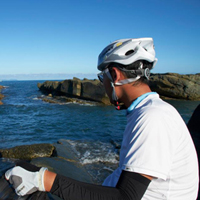
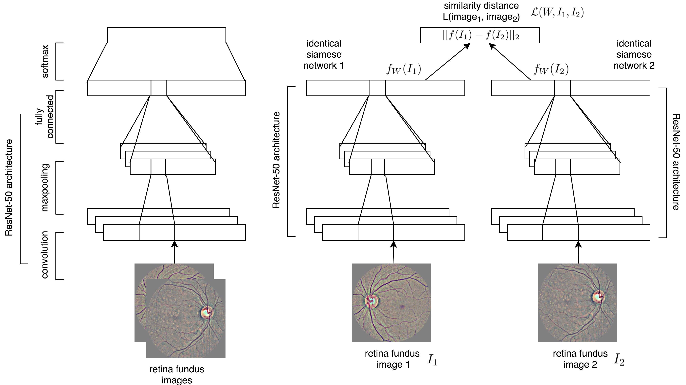
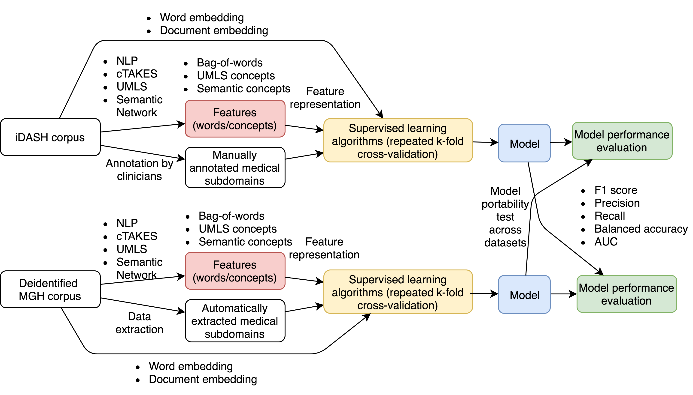
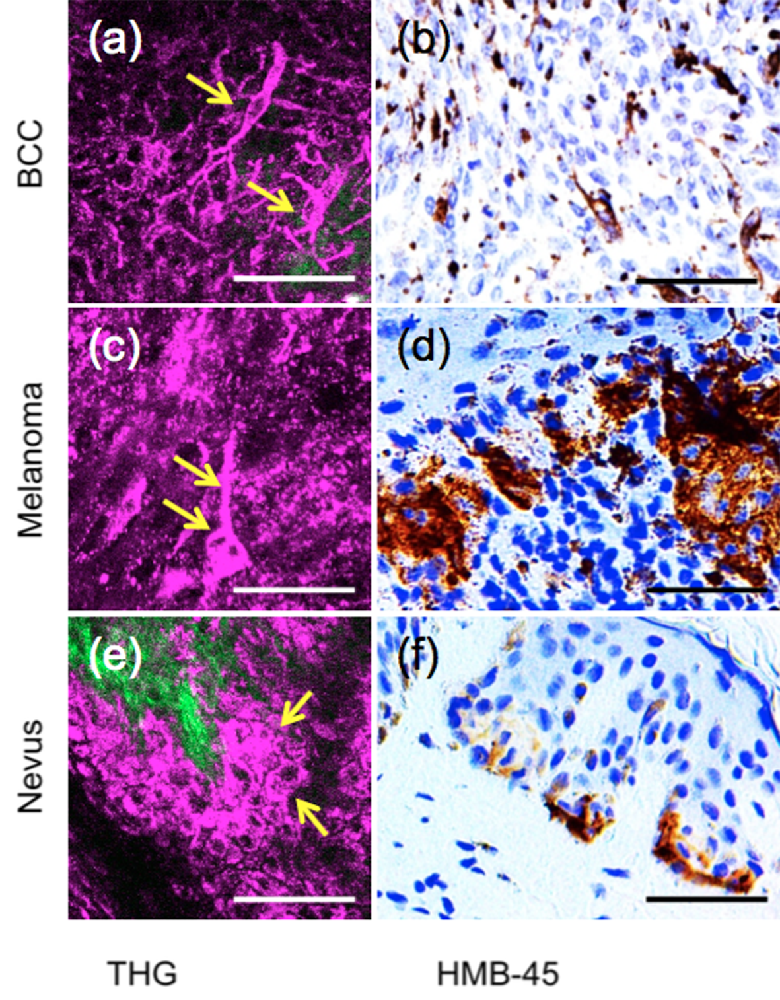

bio / curriculum vitæ
 I am a second year PhD student at MIT CSAIL, and advised by Professor Peter Szolovits in the Clinical Decision-Making Group. Prior to MIT, I received my MD at Chang Gung University, and MMSc in biomedical informatics at Harvard Medical School. I also worked as physician and pathologist for years. My current research focuses on learning representation for cross-modal and cross-domain biomedical data and clinical predictive analytics.
selected publications
|  |
Learning Representation of Multi-modal Data [MIT CSAIL] Unsupervised Clinical Language Translation KDD 2019 [paper] [code] Towards Unsupervised Speech-to-Text Translation ICASSP 2019 [paper] Unsupervised Multimodal Representation Learning across Medical Images and Reports NeurIPS ML4H 2018 [paper] Predicting Blood Pressure Response to Fluid Bolus Therapy Using Attention-Based Neural Networks for Clinical Interpretability NeurIPS ML4H 2018 [paper] Unsupervised Cross-Modal Alignment of Speech and Text Embedding Spaces NeurIPS 2018 [paper] [slides] Mapping Unparalleled Clinical Professional and Consumer Languages with Embedding Alignment KDD MLMH 2018 [paper] [slides] Learning Deep Representations of Medical Images using Siamese CNNs with Application to Content-Based Image Retrieval. NIPS ML4H 2017 [paper] |
|
Reinforcement Learning for Sequential Clinical Decision Making [MIT CSAIL] Representation and Reinforcement Learning for Personalized Glycemic Control in Septic Patients. NIPS ML4H 2017 [paper] | |
|  |
Machine Learning-Based Clinical Natural Language Processing [MGH LCS] Medical Subdomain Classification of Clinical Notes Using a Machine Learning-Based Natural Language Processing Approach. BMC Medical Informatics and Decision Making [paper] [code] |
|  |
Biomedical Imaging Analysis and Machine Learning [NTU MIC] Differentiating intratumoral melanocytes from Langerhans cells in nonmelanocytic pigmented skin tumors in vivo by label-free third-harmonic generation microscopy. Journal of Biomedical Optics, 2016. [paper] [slides] Automated Detection of Noninvasive Imaging of Basal Cell Carcinoma by Convolutional Neural Network. NIPS ML4H 2015 [paper] |
personal interests
| classical music | Scriabin, Prokofiev
| contemporary music | Ryuichi Sakamoto, Arvo Pärt
| jazz | Keith Jarrett, Bill Evans
| techno | Hiroshi Watanabe (kaito)
| world music | Yunggiema, Alan Dawa Dolma
| painter | Dali, Magritte, M.C. Escher
| architect | Tadao Ando, SANAA, Alvar Aalto
| graphic designer | Kenya Hara
| writer | Haruki Murakami, Umberto Eco, Jared Diamond, Yuval Harari, Steven Pinker
| movie | Inception, The Silence of the Lambs, Amélie, Ulysses' Gaze |
photography | cycling | Go | traveling